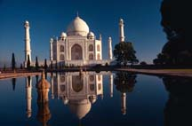
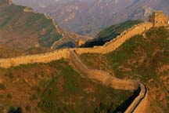
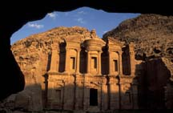
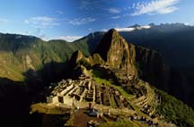
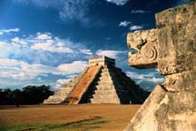
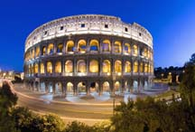

The New7Wonders organization is happy to announce that the following 7 candidates have been elected by more than 100 million votes to represent global heritage throughout history. The listing is in random order, as announced at the Declaration Ceremony on 07thjuly 2007
- India’s Taj Mahal
- The Great Wall of China
- Jordan’s Petra
- Brazil’s statue of Christ Redeemer
- Peru’s Machu Picchu
- Mexico’s Chichen Itza pyramid
- The Colosseum in Rome
- Taj Mahal
 The Taj Mahal, in Agra, India, is the spectacular mausoleum built by Muslim Mughal Emperor Shahjahan to honor the memory of his beloved late wife, Mumtaz Mahal. Construction began in 1632 and took about 15 years to complete.
Shahjahan was deposed and put under house arrest by one of his sons soon after the Taj Mahal's completion. It's said that he spent the rest of his days gazing at the Taj Mahal from a window.
- Great Wall of China
 This newly elected world wonder was built along China's northern border over many centuries to keep out invading Mongol tribes. Constructed between the fifth century B.C. and the 16th century, the Great Wall is the world's longest human-made structure, stretching some 4,000 miles (6,400 kilometres). The best known section was built around 200 B.C. by the first emperor of China, Qin Shi Huang Di.
The wall was among the winners of the New7Wonders poll announced during a televised ceremony in Lisbon, Portugal. However the Chinese state broadcaster chose not to broadcast the event, and Chinese state heritage officials refused to endorse the competition. It was a different story for some of the other candidates. In Brazil, for example, President Luiz Inácio Lula da Silva encouraged his compatriots to vote for Rio de Janeiro's mountaintop statue of Jesus Christ.
- Jordan’s Petra
 Perched on the edge of the Arabian Desert, Petra was the capital of the Nabataean kingdom of King Aretas IV (9 B.C. to A.D. 40). Petra is famous for its many stone structures such as a 138-foot-tall (42-metre-tall) temple carved with classical facades into rose-colored rock. The ancient city also included tunnels, water chambers, and an amphitheater, which held 4,000 people.
The desert site wasn't known to the West until Swiss explorer Johann Ludwig Burckhardt came across it in 1812.
Jordan has taken the New7Wonders competition seriously. Petra is an important attraction in a country where tourism has recently suffered due to troubles in the Middle East region, particularly in neighboring Iraq. The Jordanian royal family backed a campaign promoting Petra's selection.
- Brazil’s statue of Christ Redeemer
![[Statue of Christ Redeemer]](StatueinRio.jpg) July 9, 2007-The 105-foot-tall (38-metre-tall) "Christ the Redeemer" statue in Rio de Janeiro, Brazil, was among the "new seven wonders of the world" announced July 7 following a global poll to decide a new list of human-made marvels.
July 9, 2007-The 105-foot-tall (38-metre-tall) "Christ the Redeemer" statue in Rio de Janeiro, Brazil, was among the "new seven wonders of the world" announced July 7 following a global poll to decide a new list of human-made marvels. statue of Christ the Redeemer is located at the top of Corcovado Mountain at a height of 710 metres, Statue of Christ the Redeemer Brazil is certainly one of the world's best known and most visited monuments. The statue of Christ the Redeemer represents Jesus standing with outstretched, welcoming arms and is one of the most famous symbols of this lively city.
- Peru’s Machu Picchu
 One of three successful candidates from Latin America, Machu Picchu is a 15th-century mountain settlement in the Amazon region of Peru.
The ruined city is among the best known remnants of the Inca civilization, which flourished in the Andes region of western South America. The city is thought to have been abandoned following an outbreak of deadly smallpox, a disease introduced in the 1500s by invading Spanish forces. Hundreds of people gathered at the remote, 7,970-foot-high (2,430-metre-high) site on Saturday to celebrate Machu Picchu's new "seven wonders" status.
- Mexico’s Chichen Itza pyramid
 Chichén Itzá is possibly the most famous temple city of the Mayas, a pre-Columbian civilization that lived in present day Central America. It was the political and religious center of Maya civilization during the period from A.D. 750 to 1200.
At the city's heart lies the Temple of Kukulkan (pictured) which rises to a height of 79 feet (24 meters). Each of its four sides has 91 steps-one step for each day of the year, with the 365th day represented by the platform on the top.
- The Colosseum in Rome
 The only finalist from Europe to make it into the top seven-the Colosseum in Rome, Italy-once held up to 50,000 spectators who came to watch gory games involving gladiators, wild animals, and prisoners.
Construction began around A.D. 70 under Emperor Vespasian. Modern sports stadiums still resemble the Colosseum's famous design.
European sites that didn't make the cut include Stonehenge in the United Kingdom, the Acropolis in Athens, Greece, and the Eiffel Tower in Paris, France.
The Vatican in Rome accused the competition's organizers of ignoring Christian monuments, none of which was featured among the 20 finalists. Archbishop Mauro Piacenza, head of culture and archaeology at the Vatican, called the omission of sites such as the Sistine Chapel "inexplicable."
back to index - Great Wall of China